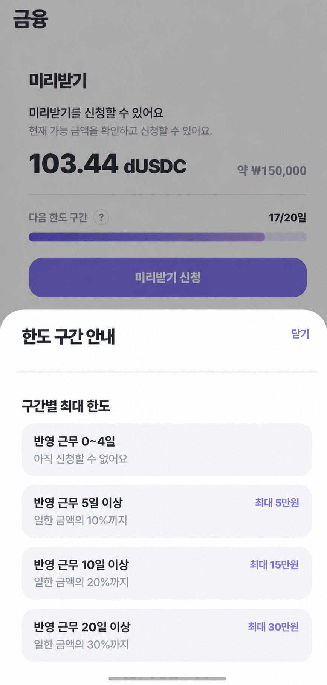
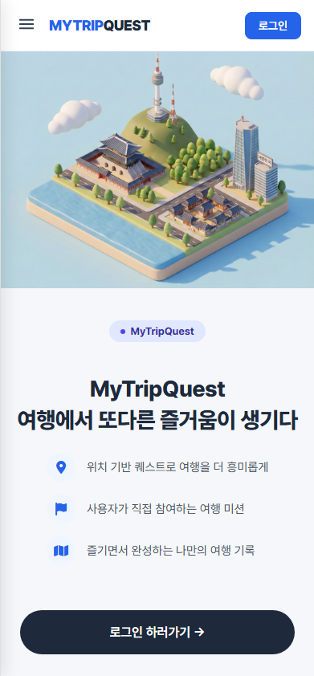

API와 접근 경계
public, authenticated, admin API 경계를 나누고 권한 조건과 실패 응답을 명확히 정리하는 데 관심이 있습니다.
API 서버, 인증·권한, 외부 API 연동을 구현했습니다.
4개 프로젝트의 문제와 해결 과정을 정리했습니다.
각 프로젝트 PDF와 주요 캡처를 연결했습니다.
백엔드 관심 영역
public, authenticated, admin API 경계를 나누고 권한 조건과 실패 응답을 명확히 정리하는 데 관심이 있습니다.
Run/Step, WorkProof, sensor status처럼 상태가 바뀌는 도메인에서 전이 조건과 예외 경로를 먼저 확인합니다.
Runner, Analyzer, Dexcom, FastAPI AI, TourAPI 같은 외부 결과를 내부 도메인 데이터로 안전하게 연결합니다.
Docker, Jenkins/GitHub Actions, README, 테스트 로그를 통해 실행·검증 가능한 자료를 남기는 방식을 지향합니다.
대표 프로젝트
클릭하면 해당 프로젝트의 문제 해결 과정으로 이동합니다.
문제 해결 과정
대표 사례 · 근거 A/B
Spring Core Backend 역할 범위에서 Runner callback의 step event를 Run/Step 상태에 매핑하고, analysis request outbox/retry와 report share token 접근 경계 구현에 참여한 것으로 정리합니다.
Run/Step 상태 전이, Runner callback, analysis outbox retry는 이 프로젝트에서 가장 설명 가치가 큰 백엔드 흐름입니다.
다음 보완에서는 중복 callback, terminal 상태 이후 evidence 거부, outbox 재시도 케이스를 targeted test와 sequence diagram으로 분리하고, Analyzer 병렬 처리 개선도 동일 조건의 측정 로그와 함께 정리하겠습니다.
대표 사례 · 근거 A
WorkProof 출퇴근 기록을 Wage verification snapshot, 문서 생성, Claim 준비 흐름과 연결한 백엔드 구현 참여로 표현합니다.


WorkProof 출퇴근 기록이 Wage, Documents, Claim, Advance 흐름에서 재사용되는 구조는 이 프로젝트의 핵심입니다.
다음 보완에서는 WorkProof → Wage → Documents/Claim → Advance 흐름을 feature 단위 테스트로 다시 확보하고, Advance 요청의 Idempotency-Key 정책을 API 문서와 코드에서 일치시키겠습니다. PDF 문서는 on-demand 생성에서 object storage 기반 보관 구조로 확장하는 방향을 검토하겠습니다.
보조 사례 · 근거 A/B
의료 효과나 AI 정확도를 주장하지 않고, 사용자별 데이터 격리·중복 체크·외부 AI 결과 매핑 중심으로 소개합니다.
Dexcom CGM 데이터 수집과 AI 분석 결과 연결은 사용자별 데이터 격리, 중복 방지, 외부 API 결과 매핑 관점에서 설명할 수 있습니다.
다음 보완에서는 Testcontainers 또는 별도 test profile로 CGM 파이프라인 테스트를 격리하고, Dexcom API 실패·Redis 장애·AI 서버 실패에 대한 retry, fallback, 모니터링 지표를 추가하겠습니다. 공개 화면에서는 건강정보처럼 보이는 상세 수치를 익명화해 의료 효과나 AI 정확도 주장으로 읽히지 않게 정리하겠습니다.
보조 사례 · 기여 범위 주의
2인 풀스택 프로젝트이므로 단독 구현보다 팀 구현 흐름과 설명 가능한 백엔드 조건 분리 경험으로 짧게 소개합니다.

위치, 시간, 사진 인증을 나누어 퀘스트 완료 여부를 판단한 흐름은 학습 경험으로 의미가 있었습니다.
다음 보완에서는 test profile 또는 Testcontainers로 테스트 실행 환경을 분리하고, OAuth2 로그인 이후 토큰 전달 방식은 URL 전달 대신 HttpOnly Cookie 또는 일회성 auth code 방식으로 개선하겠습니다. AI 사진 인증은 정확도 향상 주장보다 GPS·시간 선검증, AI 실패 fallback, 관리자 검토 로그를 추가하는 방향으로 보완하겠습니다.
기술 노트
실제 블로그 글로 확장 가능한 제목 후보입니다.
비동기 작업에서 callback 이벤트를 상태 전이로 매핑하고, evidence 저장 이후 analysis request 발행을 별도 흐름으로 분리한 과정을 정리합니다.
Wedge · 5분출퇴근 기록을 한 기능에서만 소비하지 않고 verification snapshot과 문서 anchor로 고정한 판단을 설명합니다.
DonDone · 4분외부 CGM 데이터의 중복 저장과 사용자 데이터 혼선을 줄이기 위해 key 구조와 recordId 체크를 분리한 흐름을 정리합니다.
DNC · 4분GPS 도착 인증, 사진 메타데이터/시간 조건, AI 판정을 한 덩어리로 보지 않고 단계별로 나눈 경험을 정리합니다.
MyTripQuest · 3분작업 방식
기능이 동작하는 것에서 멈추지 않고, 실패 케이스와 운영 관점까지 함께 고민하는 백엔드 개발자를 지향합니다. 이 포트폴리오는 프로젝트를 완벽하게 포장하기보다 판단 근거와 남은 한계를 함께 보여주는 방식으로 구성했습니다.